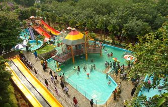

Marine Drive
Marine Drive is among the most beautiful and popular destinations in Kochi. It is frequented by locals and visitors alike due to the magnificent view of the backwaters and Kochi Harbour available here. The walkway is perfect to enjoy a relaxing stroll at any time of the day. Around the location, numerous restaurants and malls have come up which make it the de facto stop for shoppers as well. There are several boat jetties along the way and the International Boat Jetty Complex is situated here as well.

Fort Kochi
Fort Kochi is one of the most serene places in Cochin which offers a bundle of wonders to its visitors. The historic place still remains as a symbol of its glorious yesteryears. The uniqueness of this place is that the ruins of its magnificent history have remained same even amidst the modern day developments. In fact, many tourists from around the world visit Fort Kochi to witness this splendor. The best time to visit Fort Kochi is from mid August to April as the weather is usually beautiful during this time.

Wonderla
Wonderla has evolved into one of the premier amusement parks in the country. Located in Kochi, it is also regularly rated among the most visited spots in Kerala. People from across the country throng here to enjoy a multitude of rides and attractions. It is the first ISO 14001 (for environmental protection) and OHSAS 18001 (for safety) certified amusement park in India. Since 2000, it has entertained vacationers and locals alike with more than 50 rides on offer. The land and water rides are famous for the thrilling experiences they offer.

Bolgatty Palace
This is the oldest palace built by the Dutch outside the Kingdom of Holland. The palace was built by a Dutch merchant in 1744. Later, it was renovated with a magnificent lawn and a number of reforms. The palace served as the official residence of Dutch Governor. In 1909, the palace was purchased by the King of Cochin for the English East India Company. The palace was the residence of British governors during the British rule